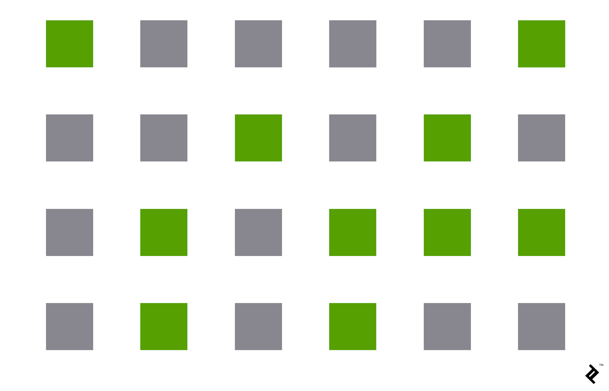
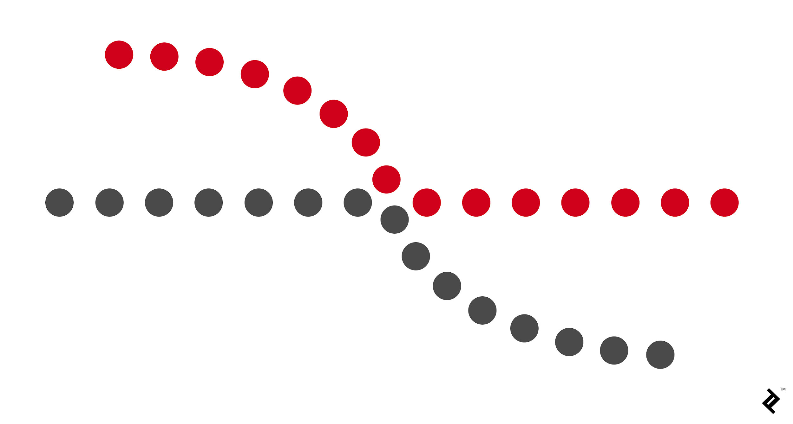
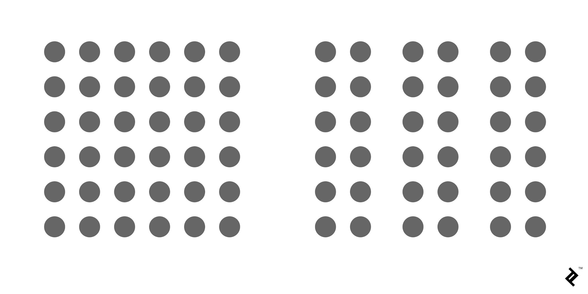
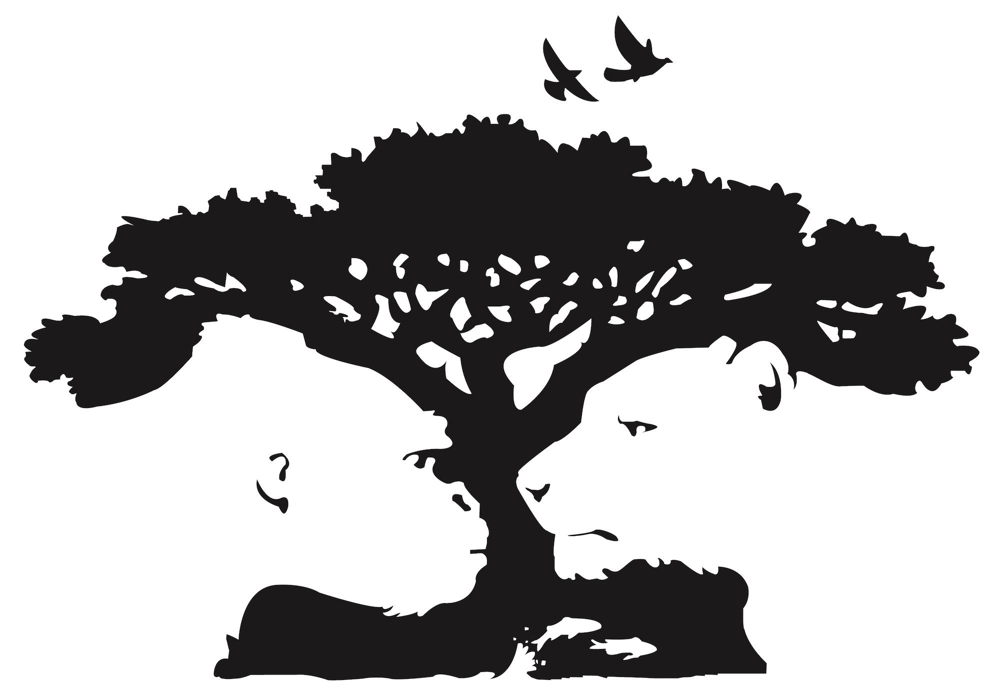
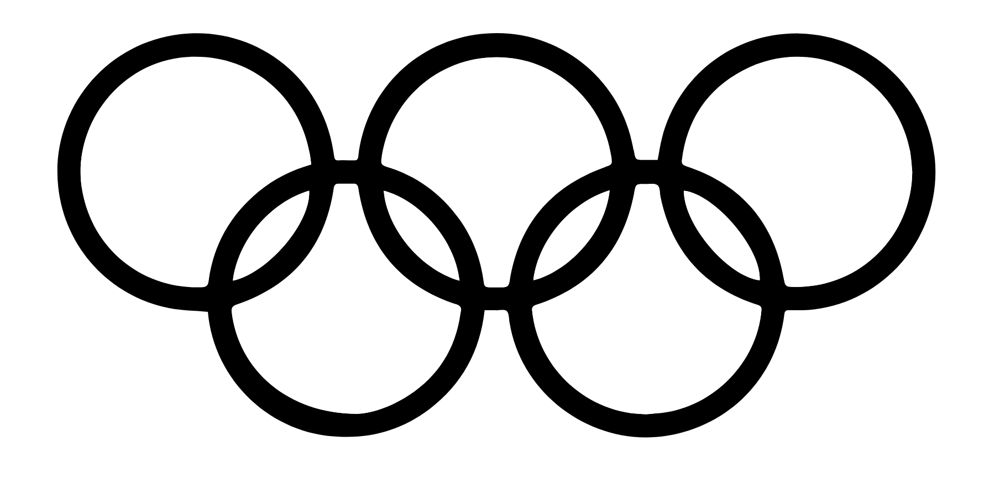
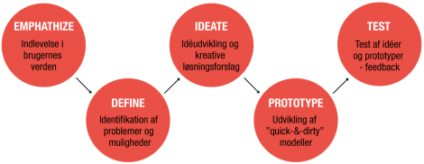

Front-end
1. semester
Farve
Farver har mange positive påvirkninger af vores underbevidst hed, dog skal de bruges med omtanke, da de lige så hurtigt kan påvirke os negativt.
Det er vigtigt at man bruger farver som et æstetisk element, der forbedrer UX for ens design
Det er vigtigt at man lærer at bruge farvepsykologien, og hvordan denne kan være anderledes alt efter kultur, sociale forhold og minder.
Vi har mange forskellige redskaber til at hjælpe os med at vælge de rigtige farve, samt få den påvirkning hos brugeren vi ønsker.
Farvehjulet
Farvehjulet er opbygget i tre forskellige dele; Primære, sekundære og tertiære farver
I midten af hjulet finder man de primære farver dette er farvene blå, gul og rød, også kendt som vores grundfarver, dem vi bruger til at blande de andre farver
- Blå
- Gul
- Rød
rundt om de primær farver, har vi de sekundære farver, dette er farverne grøn, lilla og orange. Disse er alle en kombination af 2 primær farver.
- Grøn - Kombinationen af blå og gul
- Orange - Kombinationen af rød og gul
- Lilla - Kombinationen af blå og rød
Her er grøn f.eks. en blanding af blå og gul.
yderst i farvehjulet finder vi alle farverne, både de primær, de sekundær og de tertiære som er mellem alle primær og sekundære farver. Dette er fordi de er en kombination af disse.
- Cyan - Kombinationen af blå og grøn
- Lime - Kombinationen af grøn og gul
- Lys orange - Kombinationen af gul og orange
- Mørk orange - Kombinationen af orange og rød
- Pink - Kombinationen af rød og lilla
- Navy - Kombinationen af Lilla og blå
Designpricipper
Gestaltlovene er et vigtigt redskab for alle designere, da det kan være med til at forbedre æstetikken af et design, samt dets funktionalitet og brugervenlighed.
Gestaltlovene, eller som vi ender kalde dem, gestalt principperne, er nogen principper, som er fortolker hjernens måde at simplificere og organisere komplekse billeder og designs.
Dette gør den ved, ubevidst at sætte dem ind i et organiseret system, der skaber et helt billede, fremfor en masse seperate elementer.
Hjernen er skabt til at se strukturer og mønstre, for at vi som mennekser nemmere kan forstå den verden vi lever i.
Man kan ved at forstå gestalt lovene, forbedre sin UX af sit design, betydeligt.

Similarity
Det er naturligt for mennesker, at gruppere ting som ligner hinnanden.
Inden for gestalt lovene, er ens elementer visuelt grupperet, lige meget hvor tætte de er på hinnanden.
Denne gruppering kan være baseret på farve, form, eller størrelse.
Dette betyder altså du kan lave en gruppering med similarity, lige meget hvor på siden de er.
Continuation
Gestalt loven om Continuation, påstår at det menneskelige øje vil følge den blødeste vej, når man kigger på linker, så er det ligemeget hvordan linjer i sin tid var tegnet.
Continuation kan være et meget værdifuldt redskab, når f.eks. vores mål er at guide en brugers øjne et bestemt sted hen.
Closure
Gestalt loven om Closure, er idéen om at vores hjerner vil fylde manglende dele af et design eller billede, for at skabe et helt billede.
Dette kunne f.eks. være på World Wildlife Fund's logo, hvor hjernen går ind og fylder den manglende omrids på pandaen, så du sagtens kan se hvad det er.

Proximity
Gestalt loven om Proximity, refererer til hvor tætte elementer er på hinnanden
denne lov kan bruges til enten at sammeknytte elementer, eller adskille dem.
Det kunne f.eks. være som i billedet her under, hvor alle cirkler er ens.
Figure/Ground
Gestalt loven om Figure/Grounder meget lignende closure princippet, på den måde at den udnytter hjernens måde at bearbejde negative space.
Din hjerne vil skelne mellem elementer den mener skal være i forgrunden på et billede, og hvad der er baggrunden
Det kunne f.eks. være som i billedet her under, Hvor hjernen skal skelne mellem om aben og løven er i forgrunden eller ej.
Symmetry and Order
Gestalt loven om Symmetry and Order også kendt som prägnanz, det tyske ord for "god figur".
Hvad dette princip siger er, at din hjerne vil opfatte tvetydige former på en så enkel måde som muligt. For eksempel ses en monokrom version af det olympiske logo som en række overlappende cirkler frem for en samling af buede linjer.
Common Fate
Gestalt loven om Common Fate var oprindeligt ikke en del af gestalt teorien.
Det kan være nemt at overse hvor brugbar dette princip kan være i UX Design.
I følge Common fate vil mennesker gruppere ting, der peger eller bevæger sig den samme vej.
White space
White space er eller Negative/Positive space ikke en gestalt lov, dog er det et rigtig vigtigt design princip.
White space er de to begreber Positive space, som er objektet i fokus, og Negative space som er rummet omkring objektet
Dette princip hjælper med at skabe et klart visuelt hieraki, fokus på objektet og lave orden i kaos.
Bliver disse to dimensioner brugt i balance, skaber det ro. Er der derimod ublance, kan den ene dimension overrumple den anden og skabe kaos.
Der vil herunder være 2 eksempler på White space, et hvor det bliver brugt rigtigt, og et hvor det bliver brugt forkert.
Metode
Metoder er forskellige måder vi bruger til at opnå de informationer vi ønsker.
Design thinking
Design Thinking metoden bruger elementer fra designerens værktøjskasse til at skabe innovative løsninger. Ved at anvende en Design Thinking metode baseres beslutninger i virksomheden på, hvad fremtidige kunder virkelig ønsker i stedet for på historiske data eller fornemmelser.
Metoden består af 5 udviklingsfaser og er bygget op omkring en iterativ proces, hvor man i et dynamisk udviklingsforløb arbejder sig frem og tilbage mellem faserne, indtil man når frem til et brugbart og træfsikkert resultat.
1. Empathize
Den første fase er indlevelse. Det handler om at observere og iagttage brugerne og indsamle så mange data som muligt. Ved hjælp af forskellige brugerundersøgelser opnår du en dyb indsigt i brugernes behov og livsverden og en forståelse for det problem, der skal løses. Denne første fase er helt afgørende, fordi den tillader dig at tilsidesætte dine egne og virksomhedens formodninger og forudindtagede holdninger.
2. Define
Den anden fase er problemidentifikation. I denne fase analyseres og samles alle data fra den første fase som brikker i et puslespil. Formålet er at nå frem til en konkretisering af hvilke kerneproblemstillinger, du har identificeret indtil videre -‐ og at vende disse problemstillinger til muligheder, der kan udarbejdes kreative løsninger ud fra. Denne fase sikrer, at du har helt styr på problemstillingen, og at fokus er på at skabe innovative løsninger, der indfrier brugernes behov.
3. Ideate
Den tredje fase er idégenerering. I denne fase er du klar til at udvikle masser af kreative idéer. Stort og appetitligt. Med den forståelse du har indsamlet i de første 2 faser, får du nu kreativ frihed til at tænke ”ud af boksen”. Takket være de 2 første faser, sikrer du, at den kreative proces ikke stikker af, men styres i retning af nye innovative løsninger, der er langt mere træfsikre og relevante, end tilfældet ville have været, hvis du var startet med idégenereingen som den første fase, hvilket ofte er tilfældet i udviklingsprocesser.
4. Prototype
Den fjerde fase handler om udvikling af prototyper. Ud fra de mange idéer og forskellige perspektiver på at løse problemstillingen, er det nu tid til at konkretisere et antal prototyper. Fokus er ikke på at skabe færdige, gennemarbejdede eller detaljerede produkter. Metoden er derimod ”quick-‐and-‐dirty”, og enkle visualiseringer og simple modeller er at foretrække. De skal være hurtige og billige at fremstille, og de skal kunne formidle idéerne, så de kan præsenteres og forstås af andre.
5. Test
Den femte fase handler om test af den samlede idé. Her bruger du modellerne fra prototypefasen til at få brugbar og detaljeret feedback på dine løsninger. Nogle input vil kræve mindre tilpasninger, der hurtigt kan justeres og forbedre løsningen. Andre input vil kræve, at du skal lidt tilbage i Design Thinking processen og gentage nogle af øvelserne. Det korte af det lange er, at du ved denne metode hurtigere, mere præcist og træfsikkert kommer frem til en innovativ løsning, der kan imødekomme dine brugeres behov bedst muligt.